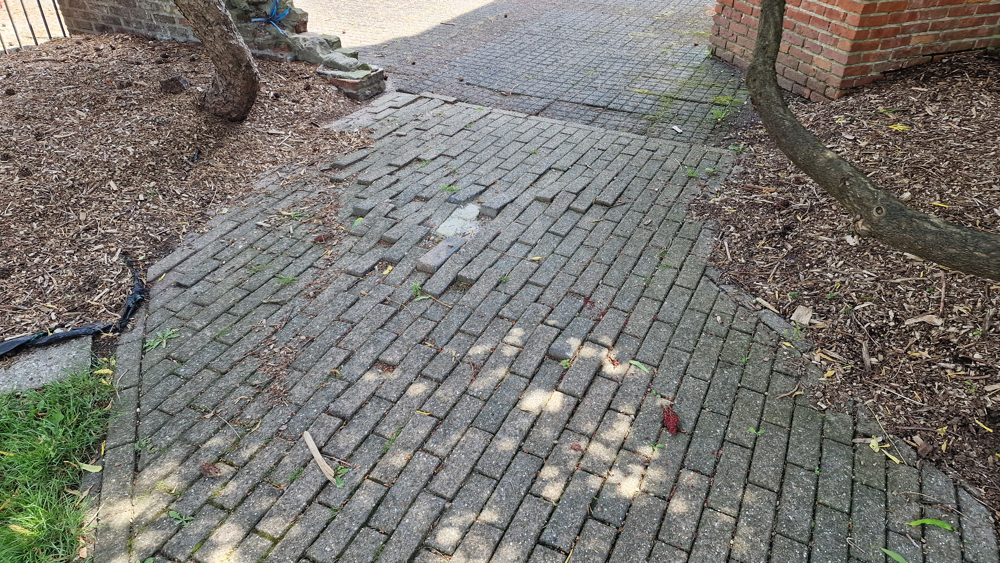
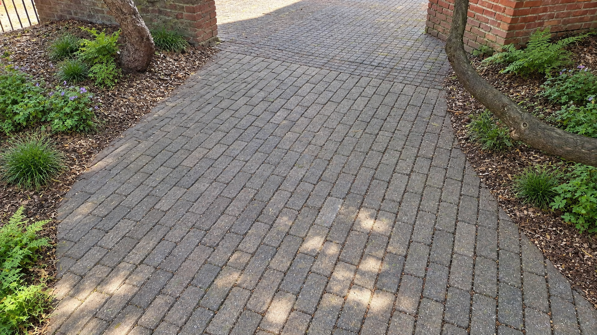
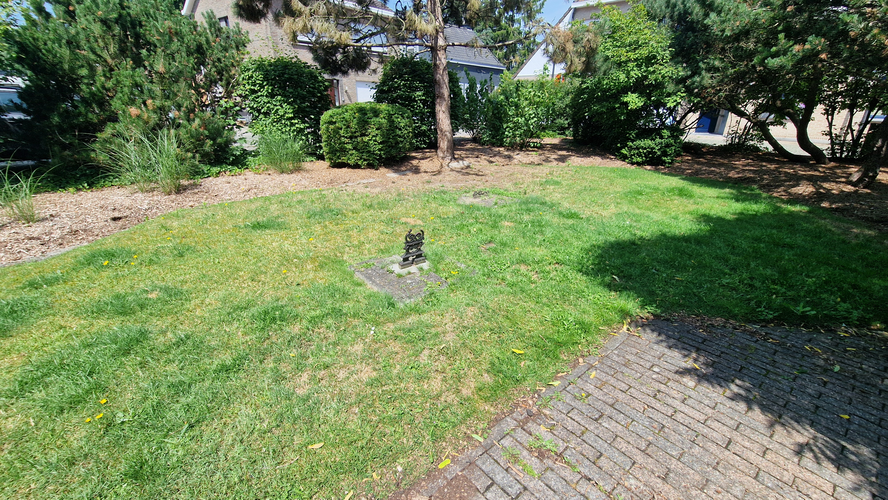
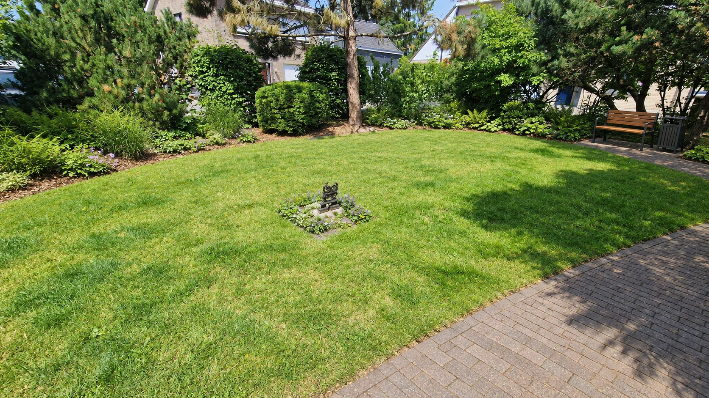
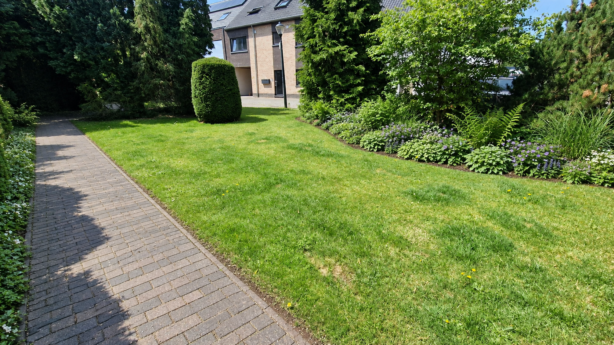

Een vlakke wandelroute
Gave klinkers worden hergebruikt op een stabiele, waterdoorlatende fundering. De bestaande looplijn blijft behouden en wordt obstakelvrij.
DEELGEBIED 01 · WEST
De beschutte westkant wordt een comfortabele wandelrand. We behouden de volwassen bomen en het vertrouwde karakter, en geven de paden en het groen de zorg die ze nodig hebben.
Idee van een vrijwilliger · geen beslist planIk verzamel ideeën en reacties van buurtbewoners. Ik neem zelf geen eindbeslissingen over de inrichting, het budget of de uitvoering. Die liggen bij de bevoegde instanties en eigenaars.

HET VOORSTEL
Gave klinkers worden hergebruikt op een stabiele, waterdoorlatende fundering. De bestaande looplijn blijft behouden en wordt obstakelvrij.
Gezonde volwassen bomen blijven staan. Wortels worden beschermd en schaduwminnende, inheemse planten verrijken de onderbeplanting.
Een discreet zitpunt met een vuilnisbak biedt rust in de schaduw. Het bestaande ornament krijgt een bescheiden rand van vaste planten.

VOOR DE BUURT
De exacte padbreedte, boomwortels en afwatering worden onderzocht vóór de heraanleg.
Denk mee over West ↗HUIDIGE SITUATIE & VOORSTEL
Vergelijk de bestaande omgeving met de voorgestelde inrichting. De visualisaties zijn indicatief en tonen geen goedgekeurd uitvoeringsplan. Selecteer een beeld om het volledig te bekijken.



